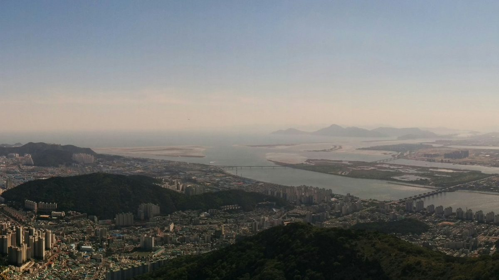

1990년 조성 부산 신평장림산단에 태양광 12.253MW·ESS 5MWh…남부발전 컨소시엄, 2029년까지 320억 원 투입 협약

입주기업 지붕·공공 유휴부지 활용, 정부출연금 200억·지방비 30억·컨소시엄 90억 원…운영 수익은 재투자하고 부산시와 만든 '햇빛소득' 모델 적용 방침, 지역 몫은 아직 안 나와
한국남부발전이 이끄는 컨소시엄이 1990년 조성돼 30년이 넘은 부산 신평장림산업단지의 입주기업 지붕과 공공 유휴부지에 2029년까지 태양광 12.253MW와 에너지저장장치(ESS) 5MWh를 짓기로 하고, 30일 부산 강서구 한국산업단지공단 부산지역본부에서 설비·시공 업체와 부산테크노파크, 한국산업단지공단 등 8개 기관과 협약을 맺었다. 남부발전 발표에 따르면 2026년부터 2029년까지 4년 동안 정부출연금 200억 원, 지방비 30억 원, 컨소시엄 투자비 90억 원 등 모두 320억 원이 들어가며, 산업통상부와 한국산업단지공단, 부산시가 지원 기관으로 참여한다. 컨소시엄은 태양광과 ESS에 더해 지능형 전력망과 에너지 통합관리시스템(EMS)을 갖춰 이미 운영 중인 명지녹산산단의 에너지 관리 기반과 잇고, 입주기업에는 에너지 진단과 탄소중립 컨설팅, 노후 설비의 고효율 교체를 지원할 계획이다. 운영 수익은 재생에너지 보급과 산단 편익 증진에 다시 투자하고, 부산시와 협업해 마련했다는 '햇빛소득' 모델을 적용해 지역사회와 성과를 나누겠다고 밝혔지만, 이 모델에서 누가 어떤 비율로 몫을 받는지와 지붕을 내주는 입주기업의 조건, 연간 발전량은 이번 발표에 담기지 않았다. 정굳건 남부발전 기후환경처장은 "산업단지의 에너지 경쟁력은 지역 산업의 지속가능한 성장을 뒷받침하는 중요한 기반"이라며 녹산국가산단에 이어 신평장림에도 재생에너지와 효율화 기반을 마련하겠다고 말했다.
시민에너지 관점
320억 원 가운데 정부출연금과 지방비를 합친 230억 원, 곧 10분의 7이 넘는 돈이 공공 재원이라면 이 발전소가 낳는 수익을 어떻게 나눌지는 시민이 미리 알아야 할 공공 정보다. 산단 지붕은 기업 소유라 지역사회 몫을 따로 떼기 어렵다는 반론이 있을 수 있지만, 지붕 임대 조건과 재투자분, 지역 몫을 나눠 적은 배분표를 내놓으면 입주기업의 이익을 해치지 않고도 수익의 흐름을 투명하게 보여 줄 수 있다. '햇빛소득'이 이름으로만 남지 않으려면 산단 노동자와 인근 주민이 출자해 발전소 일부의 주인이 되는 길을 열어, 성과를 받는 사람이 곧 결정에 참여하는 사람이 되게 해야 한다. 컨소시엄과 부산시는 설비 공사에 들어가기 전에 이 모델의 배분 주체와 비율, 시민 출자 여부를 공개해야 한다.
출처: 에너지플랫폼뉴스 2026-10-30 박병인 원문 보기
1990年造成の釜山・新平長林産業団地に太陽光12.253MW・ESS 5MWh…南部発電コンソーシアム、2029年までに320億ウォン投入で協約
入居企業の屋根と公共の遊休地を活用、政府出捐金200億・地方費30億・コンソーシアム90億ウォン…運営収益は再投資し、釜山市と作った「ヘッビッ所得」モデルを適用する方針、地域の取り分はまだ示されず
韓国南部発電が率いるコンソーシアムは、1990年に造成され30年以上たつ釜山の新平長林産業団地で、入居企業の屋根と公共の遊休地に2029年までに太陽光12.253MWとエネルギー貯蔵装置（ESS）5MWhを整備することにし、30日、釜山市江西区の韓国産業団地公団釜山地域本部で、設備・施工会社や釜山テクノパーク、韓国産業団地公団など8機関と協約を結んだ。南部発電の発表によると、2026年から2029年までの4年間で、政府出捐金200億ウォン、地方費30億ウォン、コンソーシアムの投資費90億ウォンの計320億ウォンが投じられ、産業通商部、韓国産業団地公団、釜山市が支援機関として加わる。コンソーシアムは太陽光とESSに加え、スマート電力網とエネルギー統合管理システム（EMS）を整えて、既に運営中の鳴旨・菉山産業団地のエネルギー管理基盤とつなぎ、入居企業にはエネルギー診断や脱炭素コンサルティング、老朽設備の高効率機器への交換を支援する計画だ。運営収益は再生可能エネルギーの普及と産業団地の利便向上に再投資し、釜山市との協業でまとめたという「ヘッビッ（日差し）所得」モデルを適用して地域社会と成果を分かち合うとしたが、このモデルで誰がどの割合で取り分を受け取るのか、屋根を提供する入居企業の条件、年間発電量は今回の発表に含まれなかった。南部発電のチョン・グッコン気候環境処長は「産業団地のエネルギー競争力は、地域産業の持続可能な成長を支える重要な基盤だ」と述べ、菉山国家産業団地に続き新平長林にも再エネと効率化の基盤を整えると語った。
市民エネルギーの視点
320億ウォンのうち政府出捐金と地方費を合わせた230億ウォン、つまり7割を超える資金が公的財源であるなら、この発電所が生む収益をどう分けるかは、市民が前もって知るべき公共の情報だ。産業団地の屋根は企業の所有なので地域社会の取り分を切り分けるのは難しいとの反論もあり得るが、屋根の賃貸条件、再投資分、地域の取り分を分けて記した配分表を示せば、入居企業の利益を損なわずに収益の流れを透明にできる。「ヘッビッ所得」が名前だけで終わらないためには、産業団地の労働者や近隣住民が出資して発電所の一部の持ち主になる道を開き、成果を受け取る人がそのまま意思決定に加わる人になるようにすべきだ。コンソーシアムと釜山市は設備工事に入る前に、このモデルの配分主体と割合、市民出資の有無を公開すべきだ。
出典: エネルギープラットフォームニュース 2026-10-30 パク・ビョンイン 原文を読む
1990年建成的釜山新平长林产业园区将建12.253MW太阳能和5MWh储能…南部发电联合体签约，至2029年投入320亿韩元
利用入驻企业屋顶和公共闲置用地，政府出资200亿、地方财政30亿、联合体90亿韩元…运营收益将再投资，并适用与釜山市共同制定的"阳光收入"模式，地方所得份额尚未公布
由韩国南部发电牵头的联合体决定，到2029年在1990年建成、已有30多年历史的釜山新平长林产业园区，利用入驻企业屋顶和公共闲置用地建设12.253MW太阳能和5MWh储能系统（ESS），并于30日在釜山江西区韩国产业园区公团釜山地区本部与设备和施工企业、釜山科技园、韩国产业园区公团等8家机构签署了协议。据南部发电发布的信息，2026年至2029年四年间将投入政府出资200亿韩元、地方财政30亿韩元和联合体投资90亿韩元，共计320亿韩元，产业通商部、韩国产业园区公团和釜山市作为支持机构参与。联合体除太阳能和储能外，还将建设智能电网和能源综合管理系统（EMS），与已在运营的鸣旨菉山产业园区能源管理设施相连接，并为入驻企业提供能源诊断、碳中和咨询以及老旧设备高效化更换支持。联合体表示，运营收益将再投入可再生能源普及和园区便利提升，并适用据称与釜山市合作制定的"阳光收入"模式，与地方社会分享成果；但该模式由谁、按什么比例获得份额，提供屋顶的入驻企业条件如何，年发电量多少，此次发布均未包含。南部发电气候环境处处长Jeong Gut-geon表示："产业园区的能源竞争力是支撑地方产业可持续增长的重要基础"，并称继菉山国家产业园区之后，也将在新平长林打下可再生能源和能效提升的基础。
市民能源视角
320亿韩元中，政府出资与地方财政合计230亿韩元，即七成以上是公共资金；既然如此，这座电站产生的收益如何分配，就是市民应当事先知道的公共信息。有人会反驳说，园区屋顶归企业所有，很难单独划出地方社会的份额；但只要拿出一张分别列明屋顶租赁条件、再投资部分和地方份额的分配表，就能在不损害入驻企业利益的前提下让收益流向一目了然。要让"阳光收入"不只停留在名称上，就应开辟让园区工人和周边居民出资、成为电站部分所有者的渠道，让分享成果的人同时成为参与决策的人。联合体和釜山市应在设备施工开始前，公开这一模式的分配主体、比例以及是否接受市民出资。
来源: 能源平台新闻 2026-10-30 Park Byeong-in 查看原文
Busan's 1990-built Sinpyeong-Jangnim industrial complex to get 12.253MW of solar and 5MWh of storage as KOSPO consortium signs 32 billion won deal running to 2029
Rooftops of tenant firms and idle public land to be used, funded by 20 billion won in government grants, 3 billion won in local funds and 9 billion won from the consortium; operating income to be reinvested and shared under a "sunlight income" model made with Busan city, but the local share has not been spelled out
A consortium led by Korea Southern Power (KOSPO) has agreed to install 12.253MW of solar and 5MWh of energy storage (ESS) by 2029 on the roofs of tenant companies and idle public land at the Sinpyeong-Jangnim industrial complex in Busan, which was built in 1990 and is now more than 30 years old, signing an agreement on Oct. 30 at the Busan office of the Korea Industrial Complex Corporation in Gangseo-gu with eight organizations including equipment and construction firms, Busan Techno Park and the corporation itself. According to KOSPO, a total of 32 billion won will go into the project over four years from 2026 to 2029, made up of 20 billion won in government grants, 3 billion won in local government funds and 9 billion won invested by the consortium, with the Ministry of Trade and Industry, the Korea Industrial Complex Corporation and the Busan city government taking part as supporting bodies. Besides the solar panels and storage, the consortium plans a smart grid and an integrated energy management system (EMS) linked to the energy management infrastructure already running at the Myeongji-Noksan industrial complex, and will offer tenant firms energy audits, carbon-neutrality consulting and support for replacing old equipment with high-efficiency models. KOSPO said operating income will be reinvested in expanding renewable energy and improving conditions at the complex, and that results will be shared with the local community by applying a "sunlight income" model it says was developed with Busan city, but the announcement did not say who receives what share under the model, on what terms tenant firms will provide their roofs, or how much power the plants will generate each year. Jeong Gut-geon, head of KOSPO's climate and environment office, said "the energy competitiveness of industrial complexes is an important foundation for the sustainable growth of local industry," adding that after the Noksan national industrial complex the company would lay the groundwork for renewables and efficiency at Sinpyeong-Jangnim as well.
Citizen Energy View
When 23 billion won of the 32 billion won, more than seven-tenths of the total, comes from government grants and local funds, how the income from these plants is divided is public information that citizens should know in advance. Some will object that industrial roofs belong to companies, making it hard to carve out a community share, but a distribution table that separately lists roof lease terms, the reinvested portion and the local share would make the flow of money transparent without hurting tenant firms. For "sunlight income" to be more than a name, workers at the complex and nearby residents should be given a way to invest and own part of the plants, so that those who receive the benefits are also those who help make decisions. The consortium and the Busan city government should disclose who the beneficiaries of the model are, their shares and whether citizens can invest before construction begins.
Source: Energy Platform News 2026-10-30 Park Byeong-in Read the original